This is my description Please Scroll Down to Start the Story
15-02-1946; 1000
Seven days passed. Nothing happened. The CO did not even bother to heed his brother officer's advice. He deferred the hearing till Saturday, the normal day for such work.
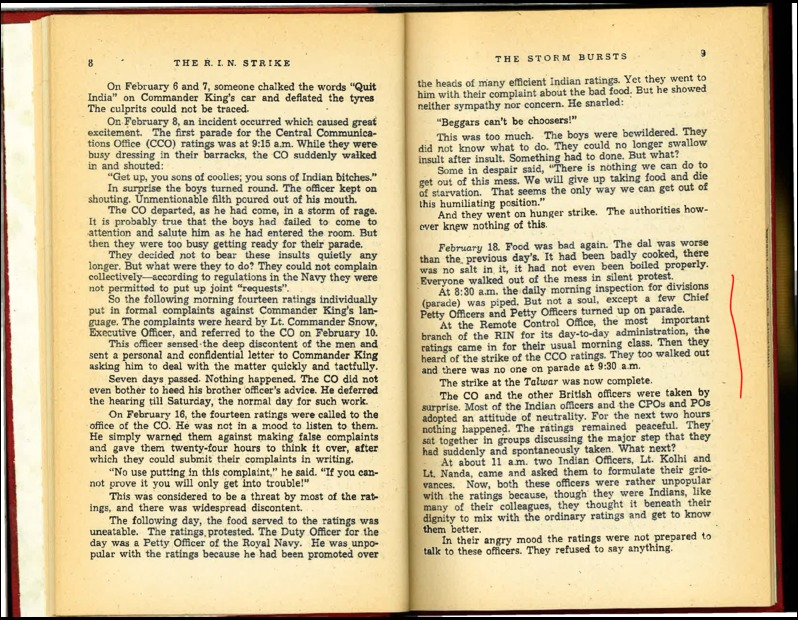16-02-1946; 0900
On February 16, the fourteen ratings were called to the office of the CO. He was not in a mood to listen to them. He simply warned them against making false complaints and gave them twenty four hours to think it over, after which they could submit their complaints in writing.
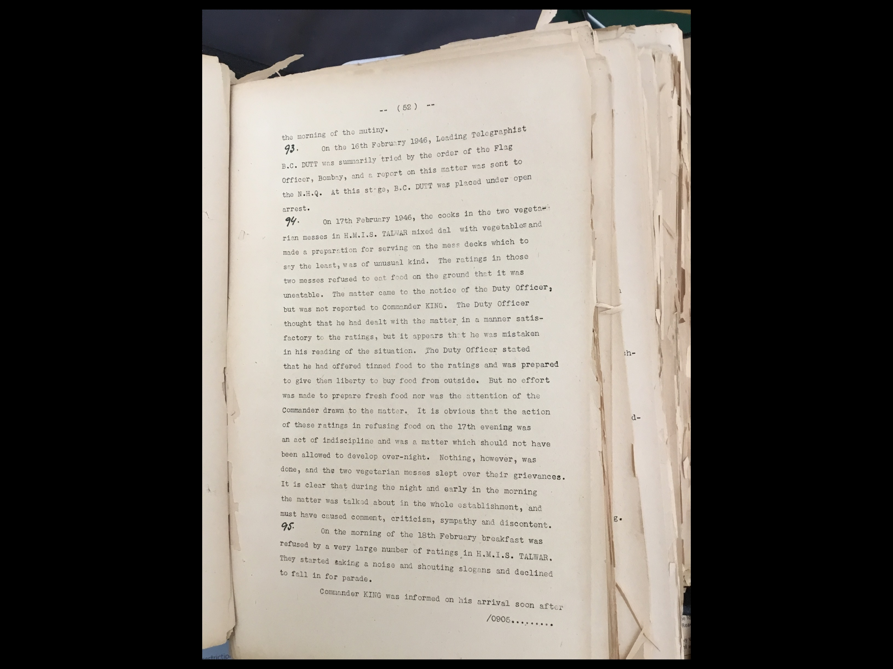18-02-1946; 0700
Food was bad again. The dal was worse than the previous day's. It had been badly cooked, there was no salt in it, it had not even been boiled properly. Everyone walked out of the mess in silent protest.

18-02-1946; 0830
At 8:30 a.m. the daily morning inspection for divisions (parade) was piped. But not a soul, except a few Chief Petty Officers and Petty Officers turned up on parade. At the Remote Control Office, the most important branch of the RIN for its day-to-day administration, the ratings came in for their usual morning class. Then they heard of the strike of the CCO ratings. They too walked out and there was no one on parade at 9:30 a.m.
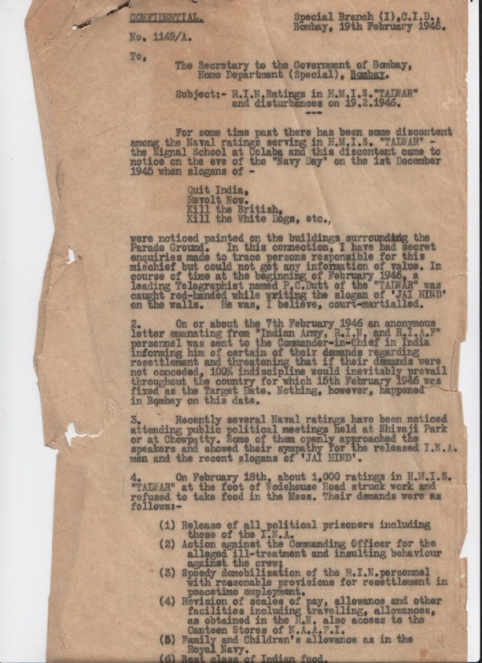18-02-1946; 1800
By the evening the news of the strike in HMIS Talwar had spread all over India. The AIR news bulletins had broadcast the story. All the ships in Bombay harbour and the shore establishments had also heard that their comrades in the Talwar were fighting for their legitimate rights. There was excitement everywhere. At Castle Barracks, at Fort Barracks and other shore establishments the ratings gathered in small groups and discussed the situation; it was something new, something unheard of. Yes, there had been strikes before but this seemed different, this seemed to be the beginning of a real big battle. The humiliation, the discrimination, the suffering must be put an end to for all time. The people of the country would help them. They would be free. Something had to be done to support the Talwar ratings. But what?

19-02-1946; 0530
Fort Barracks. As usual, at 5:30 am the bugle sounded but not a soul stirred. Everyone inside the huge buildings heard it, but today these 350 souls were determined to defy the authorities. It was the beginning of their battle to avenge all insults. After some time the ratings got up. Already some of them were busy discussing their plans for the day. In small groups they argued. Others ran about looking for the morning papers. ‘What do the papers say? Has the strike spread everywhere? What is the news from the Talwar?’ With these questions they crowded the papers, reading the headlines, from behind one another’s shoulders.

19-02-1946; 0630
At 6.30 the bugle sounded again. Normally this was the time for the ratings to fall-in on the quarter-deck for ‘cleanship’ duty. But today the ratings laughed aloud. Nobody touched the brooms. They did not bother to make their beds. No. They were too busy discussing what they should do. Arguments. Heated discussions. Should they go on hunger strike? Why not take food outside? Words, words, words poured out in an unceasing stream.

19-02-1946; 0900
As the speaker continued a rating brought a plate of dal and gave it to the speaker. He paused to look at it and continued: "You have seen one of our brothers bringing in the dal that has been prepared for our breakfast. It's just what we have been eating ever since we joined the service-foul- smelling, half-cooked and full of stones and husks. Now we must put an end to this. Now is the time to follow our brothers in the Talwar and refuse to take this food." The ratings cheered loudly. "Now, at this very moment, let us declare to the authorities that we too are going on hunger-strike. After this meeting let us form a procession and go to the Talwar to tell them that we too have joined the battle." The meeting broke up. "To the Talwar," they shouted as they went round the barracks, getting everyone together.

19-02-1946; 1145
They reached the Talwar at about 11:45 a.m.: The Talwar had become a very busy place. Ratings were pouring in from everywhere. As they entered they heard someone speaking through a loudspeaker. ''All ratings are requested to march straight to the parade ground. All civilians are asked to remain calm and wait outside. They must not try to come inside." The civilians obeyed. The ratings marched in. It was one mass of humanity.

19-02-1946; 1230
At about 12:30 p.m. a meeting was called. All gathered round. One of the leaders of the Talwar Strike Committee spoke. He narrated all the events that had led up to the strike and the ratings listened quietly...These are the demands we propose to place before the authorities today: 1. Release all political prisoners including those of the INA; 2. Take action against Commander King, CO of the Talwar, for using insulting language against the ratings; 3. Speedy demobilisation and provision for resettlement in peace-time employment; 4. Same scale of pay, allowances, etc. as those of RN ratings; 5. Access to NAAFI canteens; 6. Better food; 7. No return of clothing kit at the time of release; and 8. Withdrawal of Indian troops from Indonesia.".

19-02-1946; 1230
The Akbar had a tradition of ‘trouble’. It was probably the worst administered establishment in the whole of the RIN. Corruption of various kinds seemed to flourish there. Only ads recently as in 1944 the Hindu and Muslim ratings together had struck work because the Muslim ratings were not given enough time to say their prayers. As a result, some 200 had been dismissed. But the spirit of revolt could not be crushed. It was only on the 19th that the news of the strike reached the Akbar. For about two hours there was wild excitement all over the establishment. Work virtually stopped. At about 12:30 p.m. the authorities decided to step in. A general parade was called.
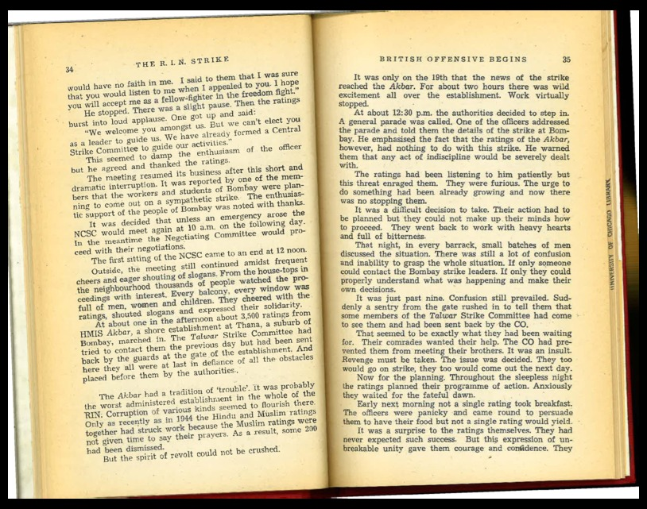19-02-1946; 1400
At about two in the afternoon some more ratings arrived at the Talwar. These new arrivals created somewhat of a sensation. Within a few minutes a procession was planned and once more, with Congress, League and Red flags, the ratings marched out of the Talwar. This time the procession was orderly arid disciplined... Going along the Colaba Causeway, they came to Flora Fountain, the centre of Bombay's business quarter, and returned to the Talwar along Back Bay.

19-02-1946; 1600
Rattray wanted to know what their grievances were. A spokesman of the Strike Committee presented him with a list of their demands...They demanded an explanation. Finally shortly after four, it was reported that Mrs. Asaf Ali could not come.

19-02-1946;2120
Police report: 'At 9-20 pm the strikers in the Fort Barracks again started trouble by throwing stones. At 9.20 pm PC No7396/I was going to Fort Street from Alexandra Dock when the strikers from the Fort Barracks assaulted him with a stick. He was treated at the G.T. Hospital'.

20-02-1946; 0100
At about 1 am, 12 lorries containing about 200 naval ratings came to Andheri from Jogeshwari side. They stopped near the Petrol Pump opposite the Andheri municipality and compelled the man in charge to supply them with 60 gallons of petrol without coupons and drove away leaving one of the lorries on the road as it was out of order.

20-02-1946; 0800
The excitement of the first day had worn a bit thin but there was an air of uncertainty everywhere. The Talwar was the hub of all activity and from every establishment and ship they began to concentrate there. Fort Barracks. The men got up early as usual. Today there were no bugles to wake them. It was their own day. They were themselves in command. Once again the morning started with arguments and discussions. The problem was food. Hunger strike was all right, but how were they going to fight? Would they not become weak from starvation? But eating food in their own mess was a difficult decision to take but then, they had no other alternative. Eating outside was an expensive business. Their pay was so low that they could not afford it. The senior ratings were so few that they could not undertake to bear the expenses of the others. So it was finally decided that they would cook food and eat it in their own mess. But would the cooks agree to cook the food? That was another problem. What about the strike? The cooks too were on strike. But they were persuaded. After all they were going to feed their comrades and keep them fighting fit. Moreover, quite a number of the ratings volunteered to help them and they all set to work. Breakfast over, they all dressed up in full uniform to go to the Talwar. In real naval style they marched out of their barracks, the three flags at the head. And they marched as if they were on ceremonial 'parade-the only difference was the flags at the head and the slogans that they shouted.

20-02-1946; 0900
But what next? They must go to the Talwar. They must join their brethren. So at 9 a.m. 2000 of them set out for Bombay...Suddenly news came that HMIS Cheetah at Trombay had been surrounded by the military.

20-02-1946; 1100
At the meeting of the strikers held at 11 am, M.S. Khan was appointed President of the Central Strike Committee by about 5,000 strikers who had collected at the Signal School at Wodehouse Road.
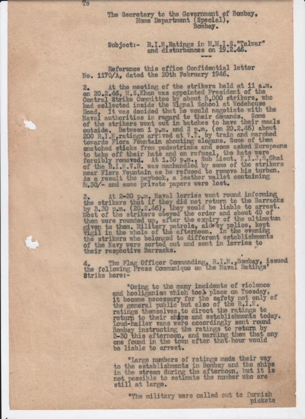20-02-1946; 1130
At 11.30 AM some naval pickets stopped a naval lorry conveying strikers near Mint Road.They asked the strikers to get off the lorry...strikers threw some stones but nobody was reported to have been injured. About this time, a RIN lorry which was going towards Colaba with a dozen strikers, took a sharp turn at the junction of Kitteridge Road and Colaba Road and turned turtle.

20-02-1946; 1300
At 1 PM, about 500 R.I.N. ratings marched from Bori Bunder to Wodehouse Road and dispersed. After 2 pm a batch of 300 ratings went to Churchgate Station and left for their camp at Jogeshwari.
20-02-1946; 1530
Very soon news began to pour in from different establishments of the arrival of military guards. At 3: 30 Maratha guards had already surrounded Castle Barracks. The men were cut off from the outside world. They were virtually prisoners. It was the same everywhere...Castle Barracks. The sight of the armed guards made the ratings furious. The offensive must be fought back. Why not break open the armoury and start fighting now? It was with great difficulty that the leading ratings persuaded the others to wait for instructions from the NCSC. After all they were fighting a joint battle. Sporadic actions would only help the enemy. Whatever they did they had to do it together....By this time Maratha guards had been posted at both the gates of the establishment. The ratings were angry but some of them spoke to the guards and found them quite sympathetic. They discovered more. The Marathas had not been told that they were being brought out to fight against their brothers in revolt. They had been told that a Hindu-Muslim conflict had broken out and that they were required to suppress the trouble. But now they were put wise and said that not one of them was going to fight against his own brothers.

20-02-1946; 1600
HMIS Gondwana. The ratings from outside had come back with the news of the latest developments. This gave rise to various discussions. Once more the battle of arguments and counter-arguments started. Unused to political struggles of any sort, they began to discuss the fundamentals. Violence versus non-violence; armed resistance versus peaceful protest. Fight back the enemy: if you do not get him he will get you. This was the lesson that they had learned during the six years of war. It had stood them in good stead all these days. But now it all seemed different. But was it really so different? Were not the British the ‘enemy'? Were they not gathering their forces? How could they keep quiet? lf they did not hit back now, they themselves would be slaughtered. After all this was war. And so they argued for hours. On the practice of non- violence they differed, but on one point they agreed. There could be no ignoble surrender. If the British attacked they would have to be fought back with arms. To pacify the protagonists of non-violence it was agreed that before taking to arms a warning would be given to the enemy asking him to clear out. Once this was decided, they began to work with clockwork efficiency. A list of arms and ammunition was prepared. The officers had already abandoned the ship and everything was in the hands of the ratings. The weapons were not many, but sufficient to carry on for some time. They had 4 inch guns, medium machine-guns, rifles, revolvers, grenades and depth-charges. All the weapons and ammunition were ready for use as they had been recently prepared for training purposes. An emergency programme was next chalked out. The tasks were allotted, orders were given and battle positions chosen. A watch was appointed for the night with orders to keep a look-out for ship movements during the night.

20-02-1946; 1700
The news spread like wild fire among the ratings in the Detention Quarters. But they did not know what to do. The CPOs and POs, nearly equal in number to the ratings, were very hostile. They could not go and ask them what to do. So they were in a fix with nobody to guide them. The whole day passed in deliberations and when the ratings returned from the Talwar it was finally decided that they would refuse duty that night. No rating turned up at Night Watch. Promptly the Commanding Officer together with other officers and'the Master- at-Arms came ·over to the ratings and asked them to remain loyal.
21-02-1946; 0730
The fateful day dawned. The night had passed quietly. The morning too seemed pleasant and peaceful. By 7:30 the ships poured out their load of ratings on the dockyard. After a night of tense expectation and anxiety there was now a sense of relief. The boys sang and shouted and greeted the peaceful morning with revolutionary slogans. At Fort Barracks the ratings gathered in the gymnasium after breakfast to plan their programme for the day. There followed the usual clash of ideas and suggestions and speeches expressing the determination to continue the struggle against all odds. Suddenly a rating broke into the meeting from outside. He rushed to the platform and cried: "They are shooting down our brothers at Castle Barracks. We must go to their help." It took them some time to realise what had happened. There was a sudden silence. Then the fury burst forth. So the enemy had struck. Yes. They must rush to the side of their brothers. Why waste time in useless discussion? There was no time for words. It was time for action.
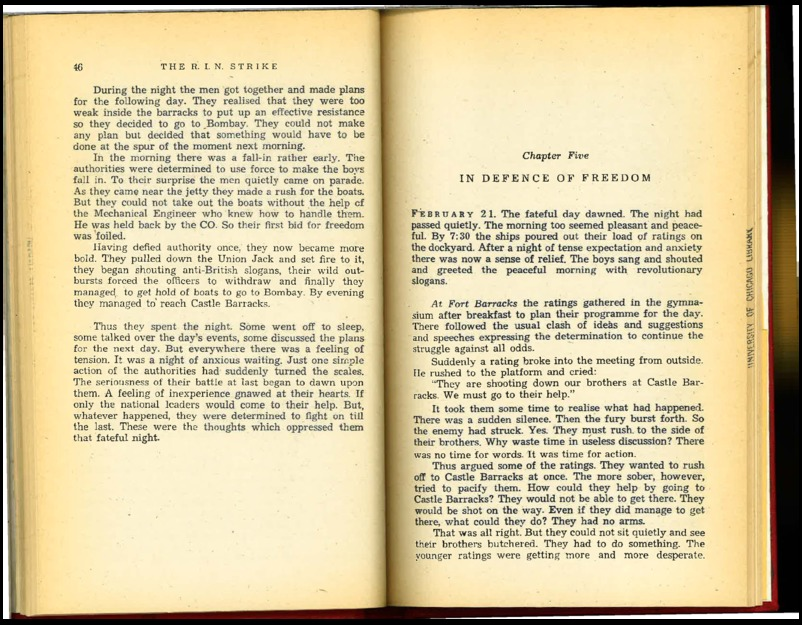21-02-1946; 0730
The fateful day dawned. The night had passed quietly. The morning too seemed pleasant and peaceful. By 7:30 the ships poured out their load of ratings on the dockyard. After a night of tense expectation and anxiety there was now a sense of relief. The boys sang and shouted and greeted the peaceful morning with revolutionary slogans. At Fort Barracks the ratings gathered in the gymnasium after breakfast to plan their programme for the day. There followed the usual clash of ideas and suggestions and speeches expressing the determination to continue the struggle against all odds. Suddenly a rating broke into the meeting from outside. He rushed to the platform and cried: "They are shooting down our brothers at Castle Barracks. We must go to their help." It took them some time to realise what had happened. There was a sudden silence. Then the fury burst forth. So the enemy had struck. Yes. They must rush to the side of their brothers. Why waste time in useless discussion? There was no time for words. It was time for action.
21-02-1946; 0900
At the Dockyard too the early morning gaiety was brought to a sudden end by the sound of firing from the direction of Castle Barracks. It was about 9 a.m. A horrified silence fell over the crowd as the first piercing sound of rifle and machine-gun fire penetrated the hum of voices. Like one man they turned round anxiously towards Castle Baracks.They looked across the water. With the massive Town Hall and a cluster of houses forming the background stood a young signaller on the roof of Castle Barracks. He was sending a message to them. It said that British troops were attacking them from all sides and that they were replying: 'bullets with bullets’. The message was immediately passed on to the DSS who relayed it to all ships and establishments. The other ratings immediately dispersed to their ships. There was a lot to be done. In every ship it was the same. The ratings broke open the magazine, collected whatever arms and ammunition they could, got into their battle equipment and took up positions in the ships. In the dockyards too, battle positions were occupied. Within an hour the whole place was empty and an ominous calm had descended over the area. From their positions, the ratings watched with growing concern and impatience the truck loads of British troops moving towards Castle Barracks.
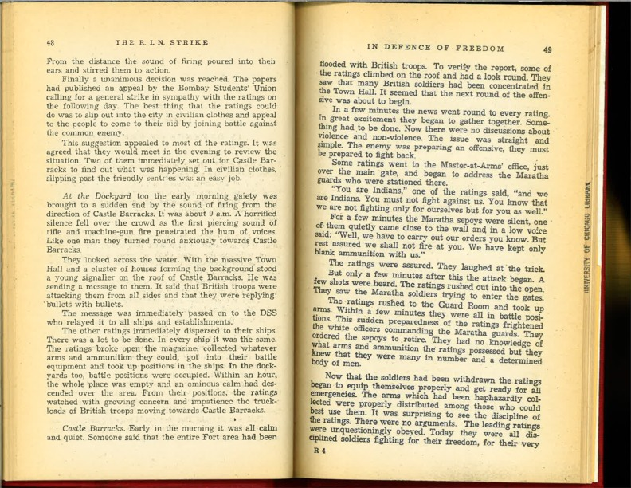21-02-1946; 1000
The fight had spread from Castle Barracks to the ships in the stream as well. At about 10 a.m., President Khan came to the break-water. The news of his arrival spread like wild fire. All the ratings expected some directive from him, an order to begin an offensive to relieve their brothers at Castle Barracks. All the ratings except those in battle positions gathered round
21-02-1946; 1050
At 10-50 am, military reinforcements had to be called for assistance in Castle Barracks. At the same time, a signal was intercepted from HMIS Narbada stating that if shots were fired by the troops, all ships would open fire. She is also repoted to have invited other ships on loud hailers inciring them by saying, 'All guns loaded. Do the same and if any shots are heard from ashore, open fire'.
21-02-1046; 1200
Godfrey had decided to begin an all-out offensive. All Indian troops were removed. British troops swarmed into the area of Castle Barracks. The Town Hall became their operations headquarters. By midday there were at least 17 trucks and armoured cars packed with troops armed with light machine-guns, rifles and other weapons held at the ready. The second phase of the offensive opened with light machine-gun fire from the direction of the gun gate. But the ratings, veterans of many a grim battle, were not in the least terrified. Promptly they took action. The light machine-gun was silenced and the two British soldiers manning it had to be removed to hospital. Now hell seemed to have been let loose. There was constant firing from both sides. The ratings knew that the were outnumbered, that the enemy had better equipment but they were still prepared to die fighting in the glorious traditions of the Indian Navy.
21-02-1946; 1330
The battle at Castle Barracks was now in full swing. At about 1:30 British troops entered the area between the Dockyard and the MTE barracks. Their main offensive was still concentrated on Castle Barracks. But they had intercepted the messages from the Narbada and knew that the ships were ready to come to the aid of the ratings on shore. So now they started a double offensive. Some climbed up the trees and began to fire in the direction of Castle Barracks. Others concentrated their fire on the ships in the break-water. Four men on the Sindh were injured. Now the ships were stirred into activity. The Punjab. was short of ammunition. The ratings acted quickly. They promptly raided the RN ship which was anchored next to them and brought over all its ammunition. They immediately opened up with one shot from the 12-pounder and followed it up with a concentration from the Oerlikon and anti-aircraft guns. Some 120 rounds were fired within a short time. By this time the other ships had also trained their guns on the same area. HMIS Oudh opened up with her 12-pounders. A number of British soldiers were thrown off the trees and the area was soon cleared. Stray sniping and intermittent firing continued for a long time all over the area. It was the same at Castle Barracks at this time. The main offensive having thus been followed by a combined action of both the ratings on the ships and those ashore, the firing died down. Stray firing however continued throughout the day.
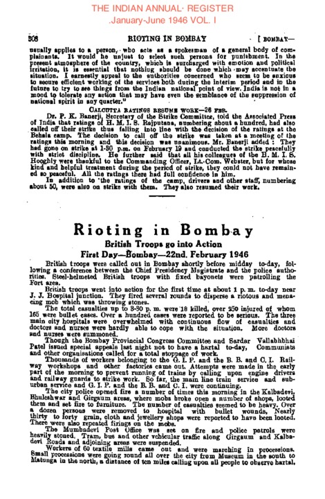21-02-1046; 1400
The Clive, Khyber and Lawrence, were near the Gateway of lndia and could resist any offensive from that end. The Narbada, Jumna, Kumaon and others near the dockyards could cover the Ballard Estate area. Orders were accordingly issued from the Narbada to these ships to be ready to fire if they saw any suspicious movements. The signals were sent to the Jumna, which relayed them to all ships and to the DSS. The DSS too repeated the signals. The Narbada was asked to supply extra ammunition wherever it was needed. After these battle plans had been drawn up, the NCSC considered the question of food and water. Food was not so much of a problem. It was always available from the people. The problem was collecting it. Already the people of Bombay had rushed to the aid of the ratings. The sea-face round the Gateway of India looked like a fair. Men, women and children, of all classes, of all religions, crowded round.

21-02-1946; 1430
Admiral Godfey’s Radio Broadcast: "In the present regrettable state of indiscipline in the Service, I have adopted this means of addressing the R.I.N. as being the way in which I can speak to the greatest number of you at one time. To start with every one of you must realise that the Government of India has no intention of allowing indiscipline to continue, or their actions to be influenced by such indiscipline. They will take the most stringent measures to restore discipline using the vast forces at their disposal if necessary. I ask you to bear this in mind in considering the other things which I have to say to you now. As regards the requests made by those of you who waited on the Flag Officer, Bombay, on Tuesday, the 19th February, you may be assured that all reasonable complaints, or grievances (if any), will be fully investigated. Demobilisation will proceed strictly in accordance with age and service groups, though you must realise that this will mean that the Service will lose its trained nucleus of experienced ratings, especially in the Communication Branch. The whole question of pay, travelling allowances and family allowances is now being examined by an inter-Services Committee. This Committee has just been afloat in one of H.M.I. ships and has visited establishments in Karachi, Jamnagar and Bombay. The situation in Bombay this morning both afloat and ashore is deplorable. A state of open rioting prevails in which ratings appear to have completely lost control of their senses. In order to ensure that ratings confined to barracks did actually stay there and to avoid a recurrence of the unfortunate incidents of the day before it was necessary to place small guards of soldiers on the gates of the Talwar and Castle Barracks last night. This morning ratings from Castle Barracks burst through the guard which was forced to open fire. This fire was replied to by ratings inside the barracks. The only reason for firing in the first place was to contain ratings within the barracks and not to coerce or intimidate them. I want again to make it quite plain that the Government of India will never give in to violence. To continue the struggle is the height of folly when you take into account the overwhelming forces at the disposal of the Government at this time, and which will be used to their uttermost even if it means the destruction of the Navy of which we have been so proud."
21-02-1946; 1700
"The Central Strike Committee of the strikers in the Indian Navy makes this earnest appeal to the leaders of the political parties in India and the Indian people. "We have all of us been in the Indian Navy for several years. During this time we have been undergoing untold hardships, low pay, bad food and the most outrageous racial discrimination. Also, today, with the end of the war, the problem of demobilisation and resettlement has come for all the thousands of us. We have innumerable times made representations to the authorities for the redressal of our grievances, particularly about racial discrimination and for equality of treatment, a demand which every self-respecting patriot will completely support. But the authorities never listened. Therefore, following the example of the brothers in the RIAF we decided to go on strike. For the last five days we have been on a peaceful, disciplined, organised strike. "The authorities, however, have refused to listen to us. Instead, they have called up the Military, particularly British troops, since naturally they could not trust our Indian Army brothers. They opened fire on us in Castle Barracks and forced us to take to arms to defend ourselves. Now the Flag Officer is threatening us with total destruction, using the overwhelming armed forces of the Empire. No Indian could expect us to surrender on such humiliating terms, to bend so low before the threatening jack-boot of our imperialist rulers. And we shall not surrender to threats, though we are always prepared to-negotiate about our demands. But we know too that the Flag Officer will carry out this threat unless, you, our people, and our respected political leaders, come to our aid. You do not want your Indian brothers to be destroyed by British bullets. You know our demands are just, you must support us. We appeal to you all, particularly to the leaders of the Congress, League and Communist Parties: Use all your might to prevent a bloodbath in Bombay!”

21-02-1946; 2000
On the evening of 21-02-1946 the local Communists went round the Mill area asking the millhands ti observe 'hartal' on 22-02-1946 as a rotest against the cut in the ration quota and also against fiting on the RIN ratings. As a result, 14 textile mills closed their night shifts.

22-02-1946; 0900
Commissioner of Police declares general curfew for 15 datys across south and central Bombay
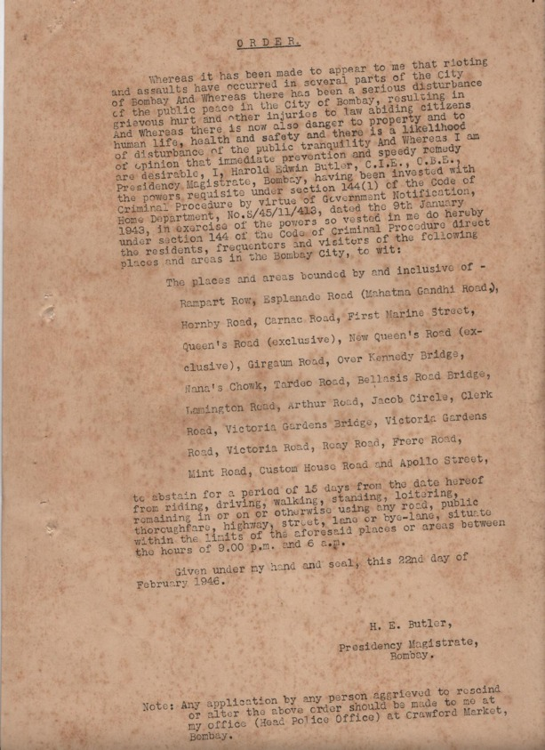22-02-1946; 1430
At about 2:30 a formation of RAF aircraft flew low over Bombay city and the harbour area.
22-02-1946; 2100
It was 9 PM when the meeting broke up. The sepoys got ready to march back. But how could that be allowed? The ratings immediately invited them to use their trucks. After all, it was all theirs now. Those who knew how to drive volunteered to take them back to their camp. Amid shouts of "Jai Hind" and "Inquilab Zindabad" the sepoys left. This visit of the sepoys from Kurla cheered up the ratings a lot. They felt again that they were not alone. It seemed obvious to them now that more and more units of the three Services would join up and this would lead to a great revolt. They also expected the British offensive to increase as well. The leading ratings of the camp got together to discuss the situation and plan a defence of the establishment if the British should attack. It was decided that they would break open the armoury and post a guard over it. Thus they would be able to take up arms to defend themselves at short notice in case of an emergency. They thought that it would be best to break open the armoury after midnight. A little after midnight a few ratings gathered together around. the armoury. As softly as they could, they broke open the lock. They threw open the doors of the armoury and, to their surprise, it was empty. They were bewildered. Now what would happen? Nothing could be done that night. In the morning it was discovered that the authorities had removed the arms an ammunition on the very first day of the strike Now a search was started throughout the camp but it was all in vain. The whole day passed in discussions .on how to procure arms and how to defend themselves in case they were attacked. Surrender they would not. That was definite. Nothing of importance happened that day. The night too passed peacefully. Of course they had no news as to what was happening in Bombay.

22-02-1946; 2330
The final historic session of the Naval Central Strike Committee began at last. It lasted till morning. About-thirty-six people were present. Khan gave a detailed report of his talks with Sardar Patel and the FOB. He said that the decision of the NCSC must reach the FOB by 6:30 in the morning. Otherwise the armed truce would be over and the entire force at his disposal would be used against the ratings. Once again he advised surrender. For a few minutes there was an uproar. Except for a small minority, everyone was opposed to the idea of surrender. That was the directive they had received from the ratings they represented. There could be no unconditional surrender. That would only be inviting defeat at the moment of victory. As one of the ratings put it: "We cannot surrender now. We are about to win our demands”.
22-02-1946; 2400
By unconditional surrender is meant (a) No conditions whatever can be stipulated by the mutineers.

23-02-1946; 1200
Shortly after midday the CO came back. He showed the ratings a signal which declared that the ratings in Bombay had surrendered and the strike was over. He called upon them to surrender too. The ratings could not believe him. How could it be? Were not they going to fight to the finish? Was not this struggle going to lead to the final battle for liberation? No, the officer was only trying to trick them into submission. They were not fools. They were not going to surrender. Some of them replied to the CO: "We do not believe you. You are trying to bluff us with bogus signals.". The CO tried to argue with them."All right”, they said, "if it is true, bring a member of the Central Strike Committee here. If he tells us that the strike is over, then we shall see”

23-02-1946; 0600
A vote was taken. Only six members opposed the decision to surrender. The rest were all in favour of Khan's motion. These six representatives came from the Punjab, Assam, Khyber, Jumna, MMS 129 and from Castle Barracks. It will be remembered that Castle Barracks had been represented by two men. One of them voted with the majority. The decision to surrender was taken. It was nearly six: Khan left to convey the decision to the FOB. The resolution passed at the meeting was immediately sent to the Press.
23-02-1946; 1200
300,000 MILL WORKERS ON STRIKE Nearly 300,000 workers were again idle to-day having refused to go to work following yesterday's firings in the labour area. All the textile mills and other factories were, therefore, idle. One or two textile mills which made an attempt to resume work this morning were prevented from doing so. The situation in the mill area upto 11 a. m was quiet. Shivaji Park at Dadar was the scene of recrudescene of trouble after 11 'o clock. this morning. A number of military lorries were reported to have been set on fire. A contingent of British troops has been rushed to this area.
26-02-1946; Time
Jawaharlal Nehru: A whole new chapter, but misguided, and no sympathy for vandalism.

25-02-1946; 1000
Letter from Rear Admiral Rattray: efforts to round up and restrain any members of the ships' company who are definitely known to have taken a prominent part in the mutiny.

05-02-1947; THERE AINT NO Time ASHISH
Conditions in the RIN today a year later.

15-03-1946; 1200
Hunger strike at Mulund: About 12 noon on the 13th March a man by the name Manohar Lal, believed to be a reporter of the Free Press Journal, arrived in Mululd Camp dressed in RIN uniform
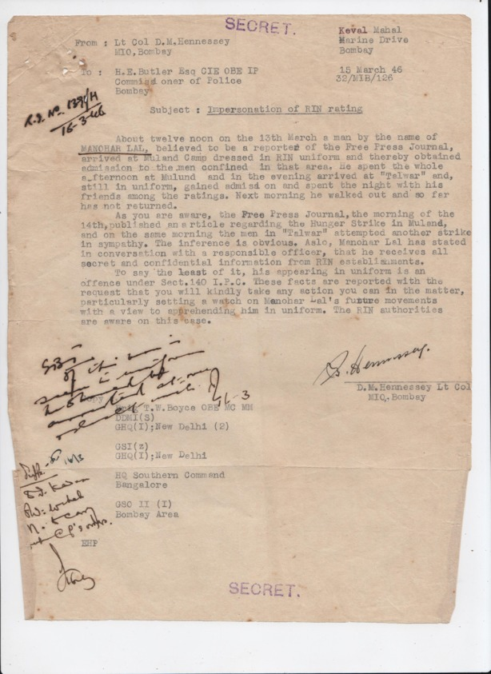19-08-1946; 1200
Thakurdwar

07-06-1946; 1200
Hill Road, Bandra

18-06-1946; 1200
Lieut S.A. Chandramani, RINVR - it has come to notice that the abovementioned officer is taking an active interest in political affairs and is closely connected with the Congress Socialist Party.
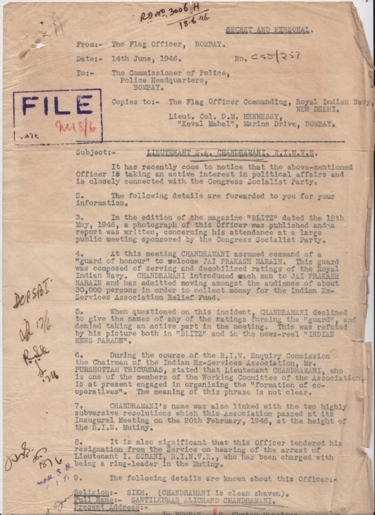08-04-1946; 1200
Krishna Nair, ordinary telegraphist, known Communist worker.
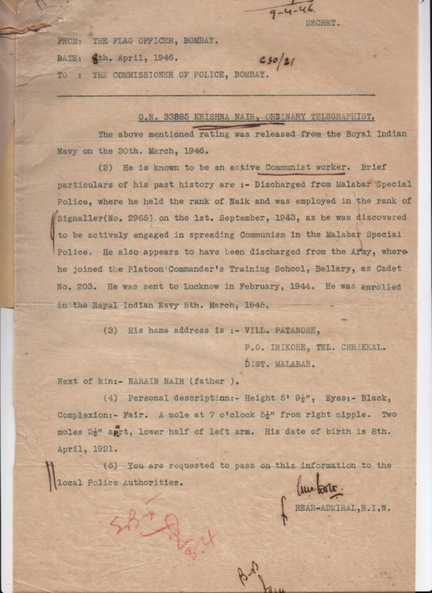25-03-1946; 1200
Rajeshwar Singh writing to Leader Manhar, Communist Party
23-05-1946; 1200
Leading Signalman M.S. Khan being deported from Bombay
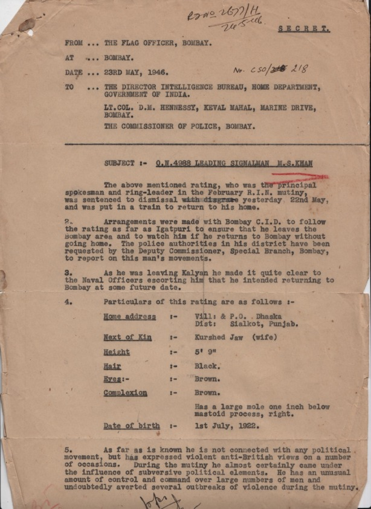20-02-1946; 0900
Mutiny spreads to the Cheetah: About the Kakauri and the Cheetah, it may be mentioned that they wwere demobilization centres and men who reached these establilshments were due to leave the Service within ten days. The mutiny was more or less a p;arting kick to the Service.
09-02-1946; 1230
The strike of the menm of the RIAF Camp at Marine Drive was called off following a meeting with the Air Commodore Cracroft. The strike was over food, better service conditions, elected representation for Indian airmen to the Central Assembly, Gratuity and deferred pay on release, war bonus, clothing allowance and establishment of welfare boards.